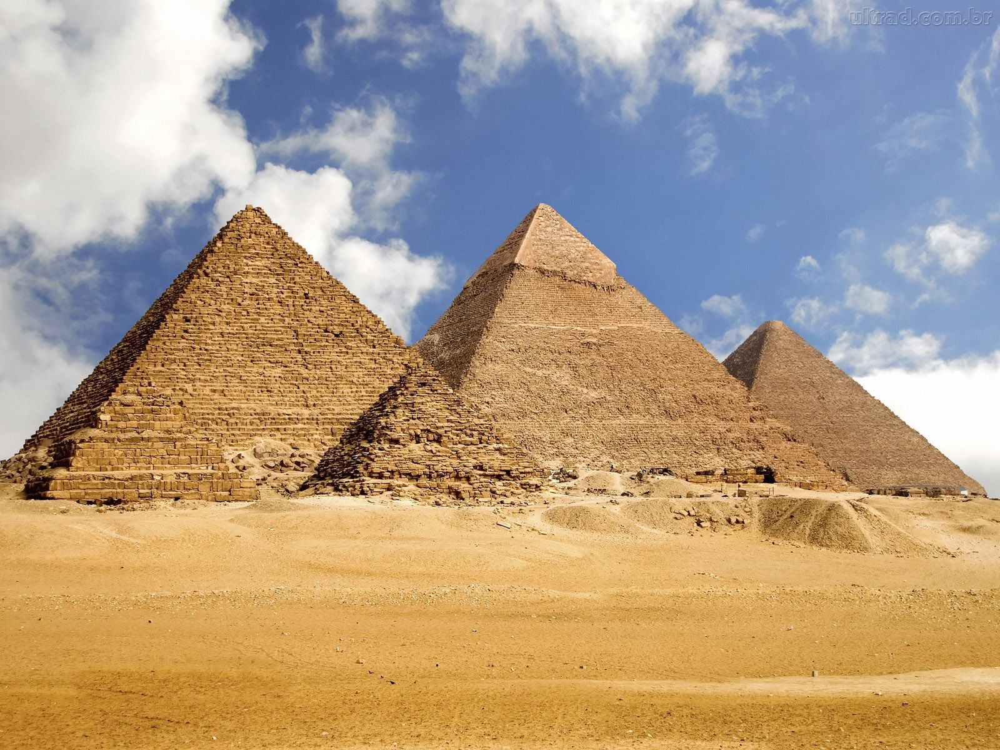
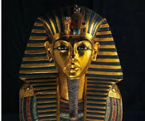

 Pirâmides do Egito são monumentos de alvenaria construídos no Antigo Egito. Como o nome indica, são formadas por uma base quadrada de quatro faces triangulares que convergem para uma vértice. Uma das três pirâmides mais famosas está no planalto de Gizé, na margem esquerda do rio Nilo, próximo à cidade do Cairo. Porem existem 138 pirâmides redescobertas, em todo o Egito, remanescentes do Antigo e Médio Império, muitas delas não conservadas, sendo a maioria, considerada templos mortuários para os faraós e suas concubinas, principalmente mas também para sacerdotes e nobres mumificados. Algumas pirâmides tinham seus vértices decorados ou forjados com ouro.
 A construção das pirâmides sofreu uma evolução, desde o monte de areia de forma retangular que cobria a sepultura do faraó, na fase pré-dinástica, passando pela mastaba, uma forma de túmulo conhecida no início da era dinástica. Foi Djoser, fundador da IV dinastia, quem mandou edificar uma mastaba inteiramente de pedra. Tinha 61 metros de altura e 6 degraus em toda a volta, com 160 metros de comprimento norte-sul e 16,05 metros de leste a oeste.